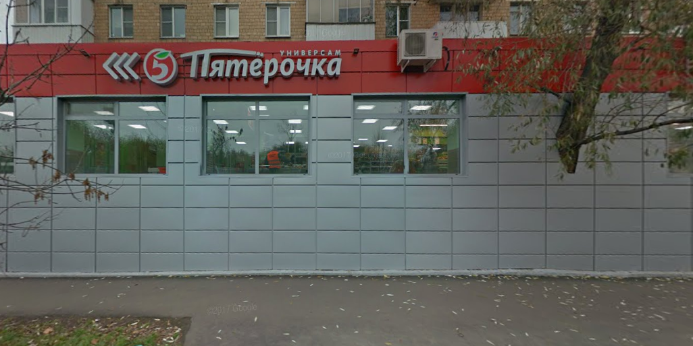
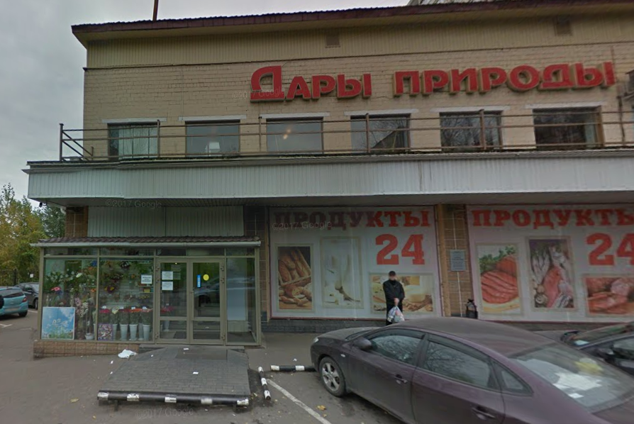
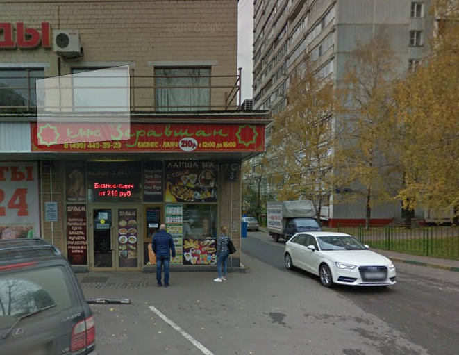
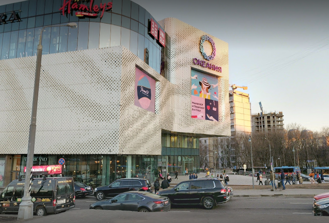

Альтернативы
Здесь мы постараемся привести ближайшие альтернативы нашей столовой.
Пятёрочка является самым замечательным вариантом для голодных СУНЦ'ов, недовольных школьной столовой.
Находится в шаговой доступности, широкий ассортимент и частые скидки -
что ещё нужно для счастья?

"Дары природы"
Практически ничем не примечательный магазин : цены на обычные продукты там сильно выше в сравнении с той же
пятёрочкой. Зато присутствует собственная выпечка, цены на которую завышены, однако можно купить чуть
вышедшие из срока годности булочки по крайне низкой цене.

Кафе "Зеравшан"
Ближайшая к зданию СУНЦ'а шаурмичная, находящаяся в одном здании с вышеупомянутыми "Дарами природы". Одна
шаурма с куриным мясом стоит 130 рублей, с говяжьим - 170 рублей. Вкус у шаурмы посредственный, мясо порой
бывает даже тухлое.

Окончание строительства этого торгового центра было настоящим подарком для учащихся СУНЦ'а. Теперь
всевозможные виды фастфуда находятся даже ближе чем метро.
